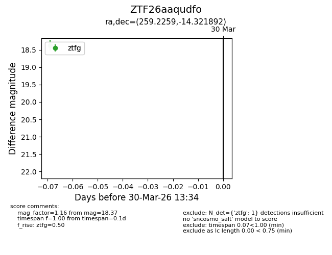
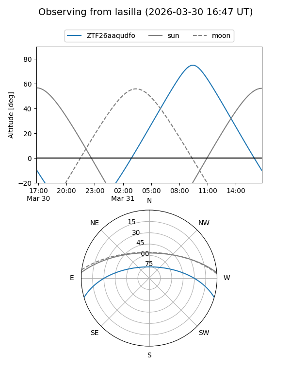
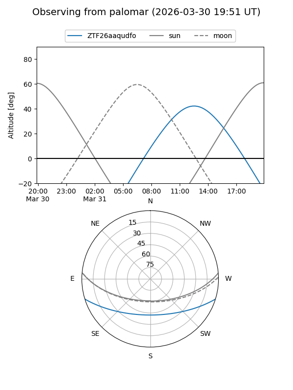

ZTF26aaqudfo
Target ZTF26aaqudfo at 2026-03-30 13:38
Aliases and brokers:
FINK: link
Lasair: link
ALeRCE: link
alt names
ZTF26aaqudfo (ztf,fink_ztf)
Coordinates:
equatorial (ra, dec) = 259.2259,-14.32189
equatorial (HMS+DMS) = 17:16:54.23,-14:19:18.81
galactic (l, b) = (8.8210,+13.46777)
Flags:
Photometry:
last ztfg=18.37
1 ztfg detections
Lightcurve

Visibility


Additional plots